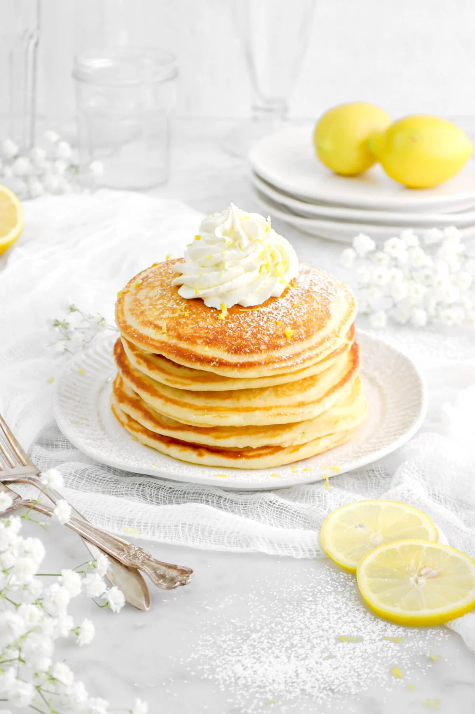
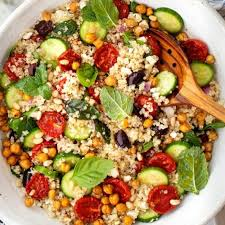
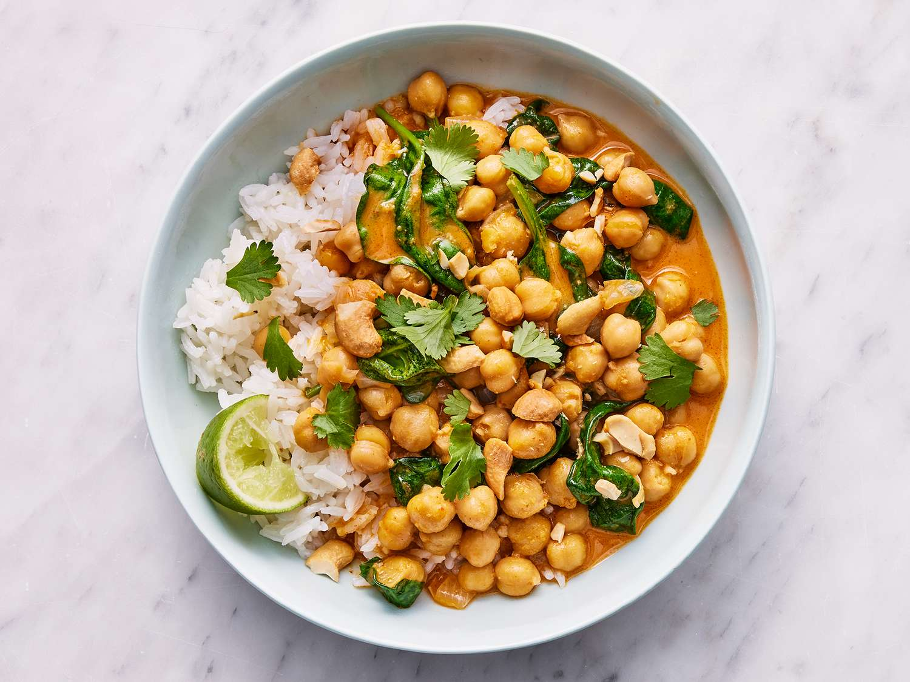
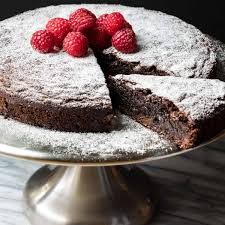

Lemon Ricotta Pancakes
Ingredients
- 1 cup gluten-free flour blend
- 1 cup ricotta
- 2 eggs, 1/4 cup milk
- 2 tbsp sugar, 1 tbsp lemon zest, 1 tsp baking powder
Method
- Whisk wet ingredients, fold in dry until just combined.
- Cook 2–3 minutes per side on medium heat until golden. Serve with berries and honey.

Quinoa Summer Salad
Ingredients
- 1 cup cooked quinoa
- Cucumber, cherry tomatoes, red onion, fresh herbs
- Olive oil, lemon juice, salt & pepper
Method
- Toss cooked quinoa with chopped vegetables and herbs.
- Dress with olive oil and lemon juice, chill and serve cold.

Creamy Chickpea Curry
Ingredients
- 2 cans chickpeas, drained
- 1 can coconut milk
- Onion, garlic, ginger, curry powder
- Tomato paste, cilantro
Method
- Sauté onion, garlic, ginger; add curry powder and tomato paste.
- Add chickpeas and coconut milk, simmer 12–15 minutes. Garnish with cilantro.

Almond Flour Chocolate Cake
Ingredients
- 2 cups almond flour, 1/2 cup cocoa powder
- 3 eggs, 1/2 cup sugar or sweetener, 1/2 cup butter
- 1 tsp baking soda, pinch of salt
Method
- Mix wet and dry ingredients until smooth.
- Bake at 350°F (175°C) for ~25–30 minutes or until a toothpick comes out clean.